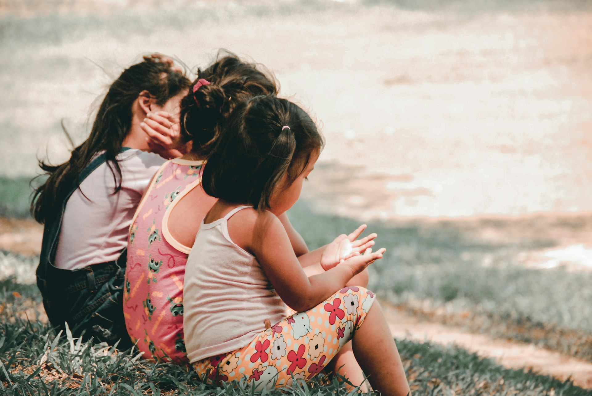

Care of Self
Children learn everyday self-care skills such as dressing, hand washing, buttoning, zipping, tying, and preparing simple snacks. These activities encourage independence and self-confidence.
Montessori Curriculum
Practical Life activities are the heart of every Montessori classroom. Through meaningful everyday tasks such as pouring, sweeping, dressing, food preparation, and caring for the environment, children build independence, concentration, coordination, and confidence.
Practical Life
Practical Life activities are one of the first and most important parts of the Montessori curriculum. They give children opportunities to practice everyday tasks that help them become independent, capable, and confident members of their community.
Rather than relying on pretend play, Montessori classrooms provide real, child-sized tools and meaningful work. Children learn skills such as pouring water, preparing snacks, sweeping, polishing, washing tables, buttoning clothing, and caring for plants. Each activity has a clear purpose and helps children master real-life skills through hands-on experience.
These activities may appear simple, but they build concentration, coordination, order, and self-confidence. As children repeat meaningful tasks at their own pace, they develop a sense of responsibility and pride in their growing independence.
At Together We Grow Montessori School, Practical Life activities are part of every child's daily routine, helping children care for themselves, care for others, and care for their learning environment.
Why It Comes First
In Montessori education, Practical Life activities often come before more advanced academic work because they help children develop the inner skills needed for successful learning.
When a child practices pouring water, carrying a tray, washing a table, or preparing food, they are developing concentration, control of movement, coordination, patience, and independence. These skills support later work in language, mathematics, sensorial exploration, and cultural studies.
Practical Life also helps children feel capable. When children can complete meaningful tasks by themselves, they begin to trust their abilities and take pride in contributing to the classroom community.
Four Areas of Practical Life
Montessori Practical Life activities are carefully organized into four main areas. Together, they help children become more independent while developing physical coordination, concentration, responsibility, and confidence.
Children learn everyday self-care skills such as dressing, hand washing, buttoning, zipping, tying, and preparing simple snacks. These activities encourage independence and self-confidence.
Children sweep floors, wash tables, water plants, polish objects, organize shelves, and care for classroom materials. They learn responsibility while helping maintain their learning environment.

Carrying trays, pouring liquids, using tongs, spooning, transferring objects, and walking carefully all strengthen coordination, balance, precision, and body awareness.

Children practice greeting others, taking turns, offering help, speaking politely, and resolving small conflicts respectfully. These lessons help build empathy and positive relationships.
In the Classroom
A Montessori Practical Life area is filled with inviting activities that allow children to work independently while practicing real-life skills. Every material is carefully prepared, child-sized, and designed to encourage success through repetition.
Children may pour water between small pitchers, spoon beans from one bowl to another, transfer objects with tongs, fold cloths, wash tables, polish mirrors, arrange flowers, prepare simple snacks, water plants, or care for classroom pets and materials. Although these activities appear simple, each one strengthens concentration, coordination, and independence.
Unlike worksheets or repetitive drills, Practical Life activities have a meaningful purpose. Children understand why they are completing each task, making the work both enjoyable and deeply satisfying. As their confidence grows, they naturally seek greater responsibility and more challenging activities.
Visitors are often surprised by how focused young children become while completing these everyday tasks. The calm atmosphere of a Montessori classroom is built through purposeful work that encourages children to become active, capable participants in their own learning.
Lifelong Benefits
Practical Life activities help children develop abilities that extend far beyond the Montessori classroom. While children are learning to pour, sweep, prepare food, or care for their environment, they are also building habits that support lifelong learning and personal growth.
These experiences strengthen executive functioning skills such as planning, sequencing, problem-solving, attention, and self-control. They also encourage children to become responsible, resilient, and confident as they learn to complete meaningful tasks independently.
As children master everyday responsibilities, they begin to believe in their own abilities. This growing confidence often carries into academic learning, social relationships, and new challenges both inside and outside the classroom.
Montessori education recognizes that true independence develops gradually through purposeful experiences. Practical Life provides children with daily opportunities to practice responsibility, perseverance, and care for themselves, others, and the world around them.
At Together We Grow Montessori School
At Together We Grow Montessori School, Practical Life is an essential part of every child's daily Montessori experience. Our carefully prepared classroom provides children with real, purposeful activities that encourage independence while fostering concentration, responsibility, and confidence.
Children are invited to choose meaningful work such as caring for classroom materials, preparing simple snacks, watering plants, practicing dressing skills, and maintaining an orderly learning environment. Every activity is presented at a child's level, allowing success through repetition and self-directed practice.
Our Montessori educators carefully observe each child's readiness, offering guidance when needed while encouraging children to solve problems independently. As children master new skills, they naturally develop greater confidence and a genuine sense of accomplishment.
We believe that independence is built one small success at a time. Through Practical Life, children learn that they are capable contributors to their classroom community, developing habits and life skills that will continue to support them far beyond their preschool years.
Frequently Asked Questions
Practical Life activities are everyday tasks that help children develop independence, concentration, coordination, responsibility, and confidence through meaningful hands-on experiences.
Practical Life builds the foundation for future learning by strengthening focus, coordination, self-control, executive functioning, and problem-solving skills that children use throughout their education.
Children may pour water, sweep floors, wash tables, prepare snacks, polish objects, water plants, practice dressing skills, and care for classroom materials using real, child-sized tools.
No. While they involve everyday tasks, each activity is carefully designed to develop concentration, coordination, independence, confidence, and responsibility in ways that support lifelong learning.
Children engage in Practical Life activities every day within a carefully prepared Montessori environment, allowing them to build independence, confidence, and responsibility through purposeful work.
Practical Life is best understood by seeing children at work. Visit Together We Grow Montessori School and discover how meaningful everyday activities help children build independence, confidence, and a lifelong love of learning.
Book a School Tour